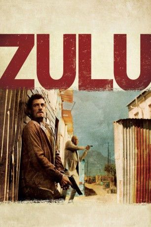
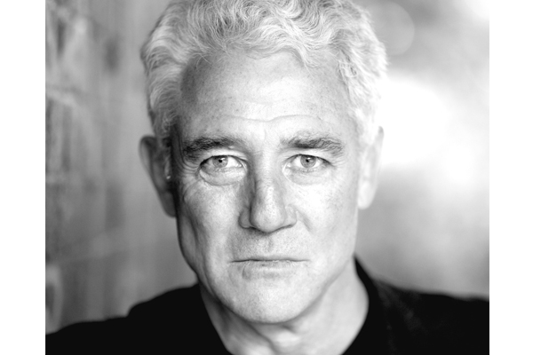
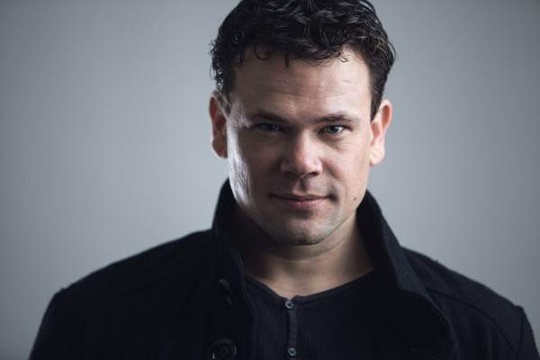

#831 Zulu
 
 IMDB-Wertung: 6.7 / 10
IMDB-Wertung: 6.7 / 10  Metascore: 0
Metascore: 0 
Ali "Zulu" Neumann ist als Kind gemeinsam mit seiner Mutter nur knapp den Inkatha-Milizen entkommen. Der Rest der Familie überlebte die Tumulte nicht – und die als Kind erlebten Schrecken wirken bis heute nach. Heute ist Ali Chef der Mordkommission in Kapstadt. Einer seiner Mitarbeiter ist Brian Epkeen: ein junger, weißer, schwer zu kontrollierender Polizist, dessen Familie in die Etablierung der Apartheid involviert war. Gemeinsam bekämpfen Ali und Brian die ausufernde Kriminalität und Gewalt in den Townships, die durch Arbeitslosigkeit und Gang-Herrschaft immer weiter verstärkt wird. Ihr Job wird noch schwieriger, als zwei junge Frauen tot aufgefunden werden. Sie hatten eine neue Designerdroge in ihrem Blut, die das Pulverfass der Gewalt schon bald explodieren lassen könnte…
Jahr: 2013
Dauer: 110 Minuten
FSK: 18
Land: Frankreich Studio: Studio Hamburg EnterprisesTonspuren: DD5.1 - ,
Untertitel: Englisch,
Auflösung: 1080p (1920x808) Größe: 4413 MB
Genre: Thriller, Drama, Krimi
Regisseur: Jérôme Salle
Drehbuch: Caryl Ferey, Julien Rappeneau, Jérôme Salle
Soundtrack: Alexandre Desplat
Darsteller:
 Orlando Bloom als Brian Epkeen
Orlando Bloom als Brian Epkeen Forest Whitaker als Ali Sokhela
Forest Whitaker als Ali Sokhela- Conrad Kemp als Dan Fletcher
-  Patrick Lyster als Dr. Joost Opperman
- Tanya van Graan als Tara
- Denise Newman als Shebeen Queen
- Sven Ruygrok als David Epkeen
- Dean Slater als Rick van der Westhuizen
- Adrian Galley als Nils Botha
- Natasha Loring als Marjorie
- Sekoati Sk Tsubane als Thug with Dreadlocks
- Kelsey Egan als Nicole Weiss
-  Richard Lothian als KZN Policeman
- Grant Swanby als Policeman at grave
- Daniele Tripepi als DPS Guy
- Lise Slabber als DPS Secretary
- Jenna Saras als Journalist - Beach
- Inge Beckmann als Ruby
- Tinarie van Wyk Loots als Claire Fletcher
- Regardt van den Bergh als De Beer
- Randall Majiet als Cat
- Joelle Kayembe als Zina
- Danny Keogh als Kruger
- Christian Bennett als Stan
- Iman Isaacs als Janet
- Nomhle Nkonyeni als Josephina
- Oscar Petersen als Captain Adams
- Khulu Skenjana als Themba
- Chuma Sopotela als Maia
- Wiseman Sithole als Dispensary Doctor
- Thenjiwe Stemela als Myriam
- Andre Roothman als Tony Montgomery
- Garth Collins als Stewart Weitz
- Roxanne Prentice als Judith Botha
- Anathe Shand als Sonia
- Elvis Mahomba als Young Ali
- Shaamilla Noordien als Beach Girl
- Clayton Evertson als Thug - Yellow t-Shirt
- Brendon Daniels als Thug - Beach 1
- Ernest Williams als Thug - Beach 2
- Travis Snyders als Thug with a Knife
- Shanville Brandt als Barman Beach
- Anton Engelen als Jon
- Henie Bosman als Shaved Head
- David Johnson als Jacob
- Reon Van De Watt als Policeman Kwazulu
- Anele Matoti als Policeman HQ 1
- Morne Visser als Policeman HQ 2
- Bronwyn Reddy als Kruger's Assistant
- Bryni Van Den Merwe als Barmaid Sundance 1
Datei: X:\FSK18-2013\Zulu (2013, FSK18, 1920x808).mkv seit 30.03.2015
Festplatte: FSK18
 Es gibt insgesamt 26 Filme in der Gruppe 'FSK18-2013'
Es gibt insgesamt 26 Filme in der Gruppe 'FSK18-2013'